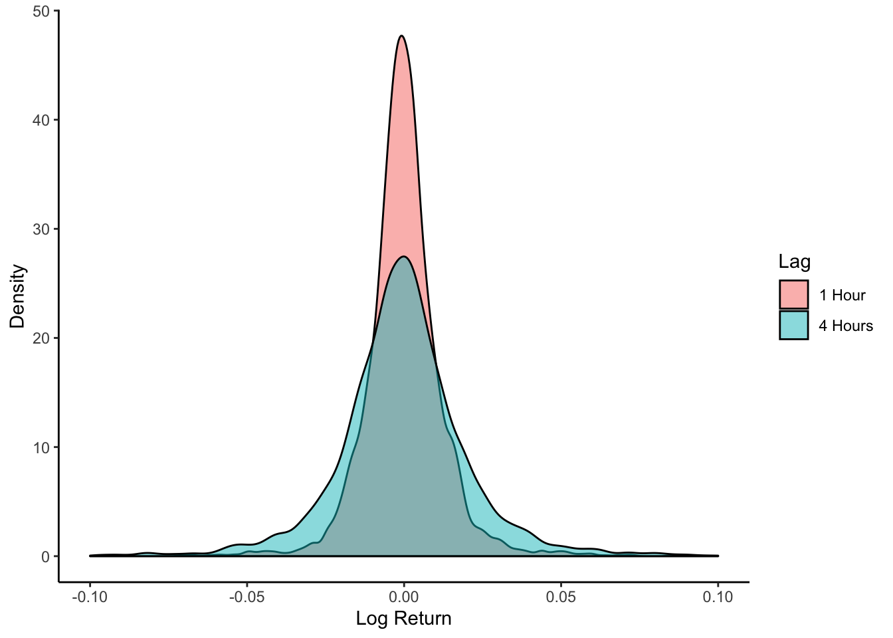

A Appendix
library(tidyverse)── Attaching packages ──────────────────────────────────────────────────────────────────────────────────────────────────────────────────────── tidyverse 1.2.1 ──✓ ggplot2 3.2.1 ✓ purrr 0.3.3
✓ tibble 2.1.3 ✓ dplyr 0.8.3
✓ tidyr 1.0.0 ✓ stringr 1.4.0
✓ readr 1.3.1 ✓ forcats 0.4.0── Conflicts ─────────────────────────────────────────────────────────────────────────────────────────────────────────────────────────── tidyverse_conflicts() ──
x dplyr::filter() masks stats::filter()
x dplyr::lag() masks stats::lag()library(gridExtra)
Attaching package: 'gridExtra'The following object is masked from 'package:dplyr':
combinedf = read.csv('data/final_dataset.csv', stringsAsFactors = F)
long = df %>% select(log_ret1, log_ret4) %>% gather(key = "Lag", value = "log_return", log_ret1,log_ret4)
p1 = ggplot(long, aes(x=log_return, fill = Lag)) + geom_density(alpha = .5) + xlim(c(-.1, .1)) +
labs(x="Log Return", y = "Density") + scale_fill_discrete(name = "Lag", labels = c("1 Hour", "4 Hours")) + theme_classic()
p1Warning: Removed 44 rows containing non-finite values (stat_density).
#p2 = ggplot(long, aes(sample=log_return, color = Lag))+stat_qq()+ stat_qq_line() + ylim(c(-.1,.1)) + #scale_color_discrete(name = "Lag (Hours)", labels = c("1", "2")) + labs(x="Sample", y = "Theoretical") + #theme_classic()